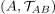
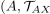
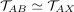
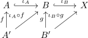
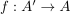
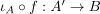

associativity of subspace topology
1. Proposition
Let  be a topological space and subsets.
Let
be a topological space and subsets.
Let

be the subspace of the subspace topology of
of the subspace topology of  and
and 
the subspace of of  Then
Then

2. Proof
Nach Charakterisierung der Unterraumtopologie als Initialtopologie für die Inklusionsabbildung sei:

So ist eine Abbildung

stetig g.d.w.
stetig ist und ist stetig, g.d.w. stetig ist. Da gilt, ist somit auch , da die Initialtopologie eindeutig bis auf isomorphie ist.